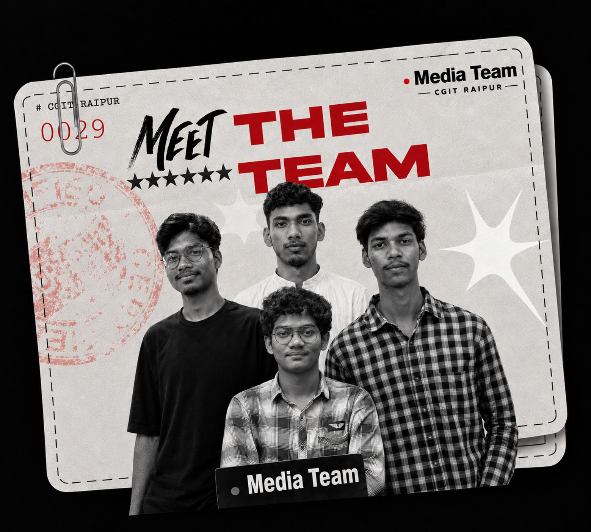
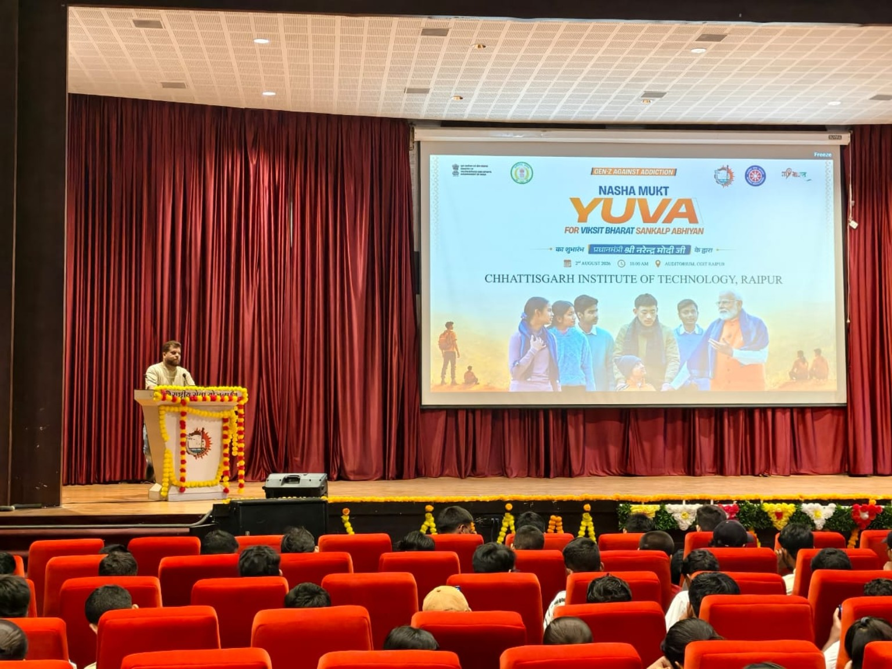
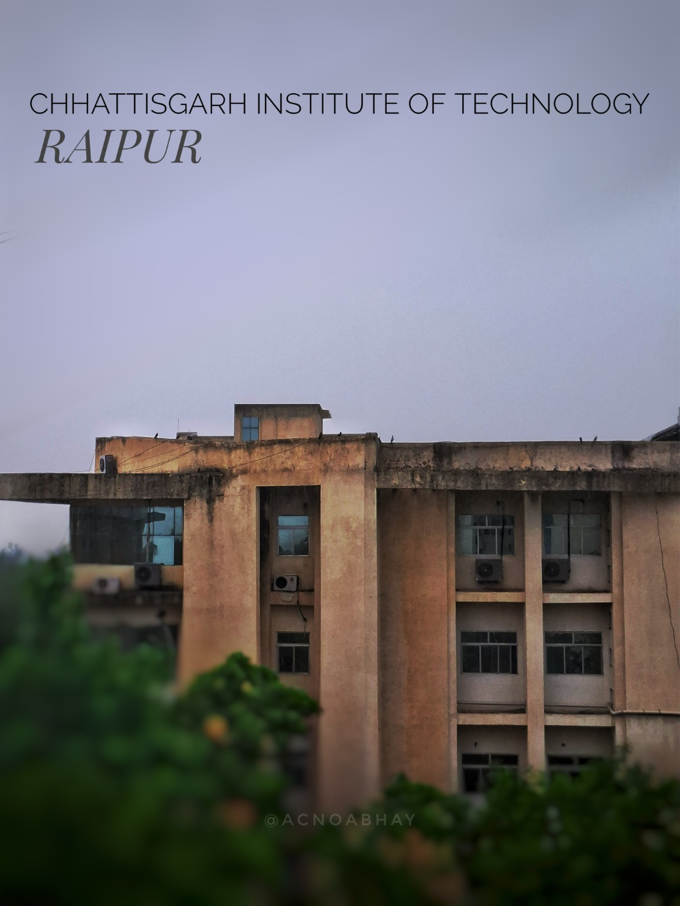
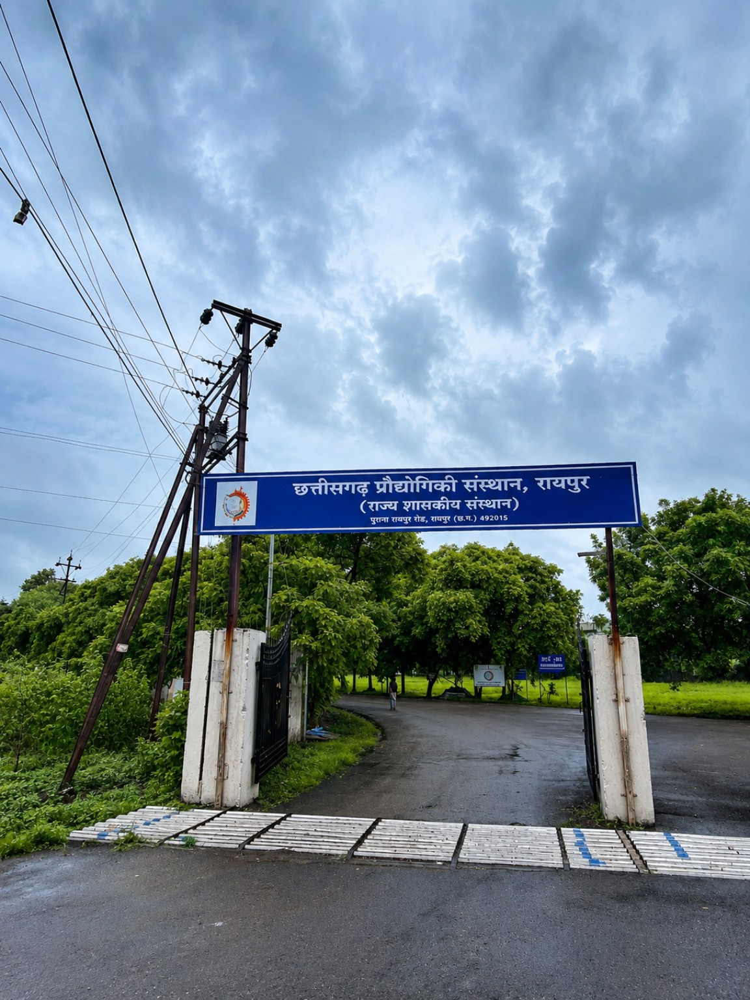
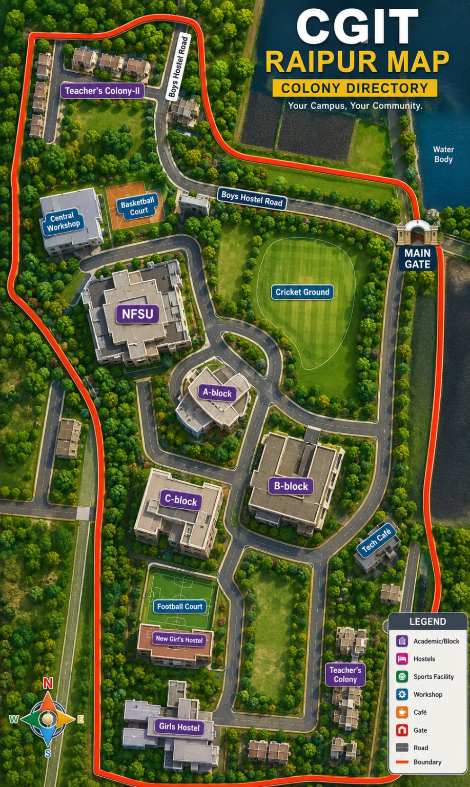
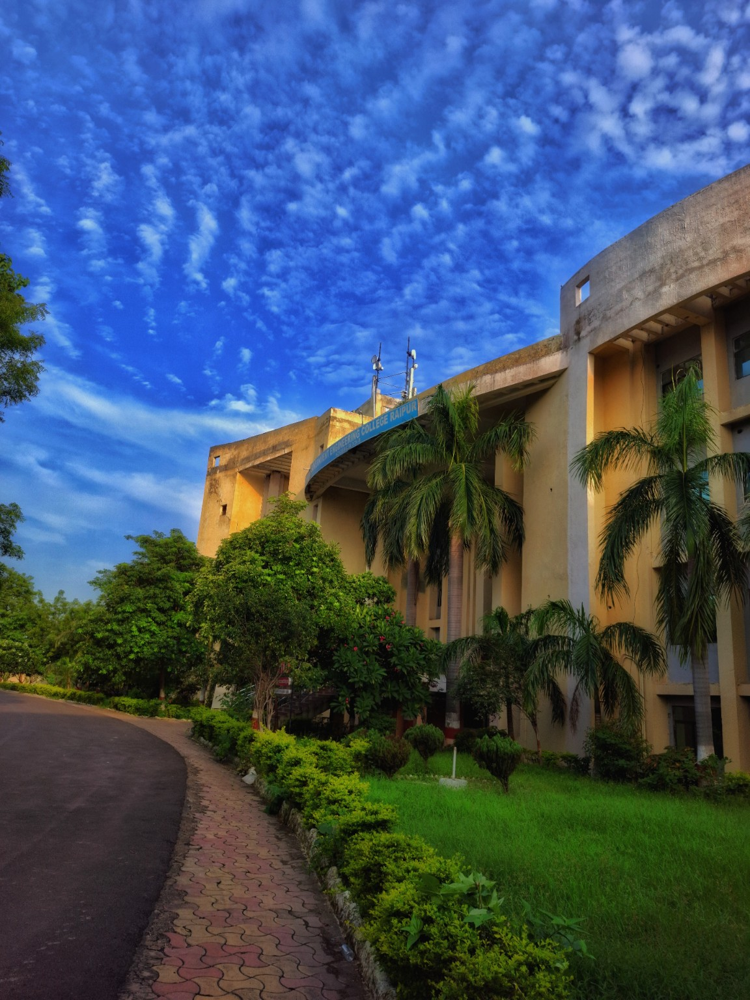
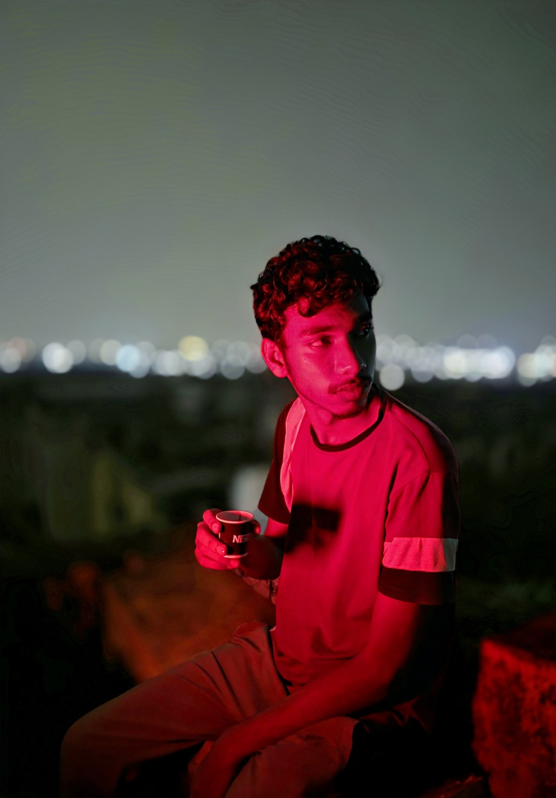

01
Student Media
Contributing to campus communication, event coverage and student-focused media work as part of the CGITR Media Team.
CIVIL ENGINEERING • CGIT RAIPUR
A student building experience beyond the classroom — through media, events, public speaking and student-led initiatives.

Abhay Baghel is a Civil Engineering student at Chhattisgarh Institute of Technology, Raipur. Alongside academics, he takes an active interest in student engagement, campus media, public speaking, event organization and community-oriented initiatives.
His college journey is shaped by a simple idea: learn, participate, create and contribute. From supporting campus media to organizing student activities and exploring new initiatives, he is building practical experience while continuing his engineering education.
Areas where Abhay is actively learning, contributing and creating.
Contributing to campus communication, event coverage and student-focused media work as part of the CGITR Media Team.
Planning and supporting student activities such as debates, academic programs and campus engagement initiatives.
Exploring debates, discussions and youth-parliament-style formats to encourage constructive student participation.
Developing independent ideas around student welfare, community participation, alumni guidance and hostel activities.

VIDYARTHI SEVA SANGATHAN
VSS is an independent and unofficial student community focused on student participation, constructive dialogue, activities and community initiatives.
A visual record of campus, media and student life.





A campus that has become the backdrop for learning, friendships, experiments, events and new ideas.

Continuing the engineering journey at Chhattisgarh Institute of Technology, Raipur.
Contributing to official campus media and student-focused communication.
Organizing and supporting debates, academic/career programs and student engagement initiatives.
Growing through projects, collaborations and meaningful campus initiatives.
Don't wait for a title to start contributing.
Start with an idea.
For student collaborations, campus initiatives, media projects and constructive ideas.
Public contact & social profiles for collaborations, student initiatives and projects.